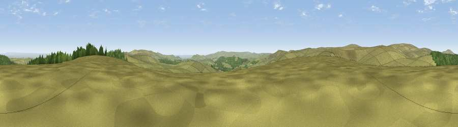

White Ridge
#14473 in England · top 24% of its area beats it · near PostbridgeThe view, rendered

A 360° render of this exact spot computed from the terrain model, tree cover and land cover — summer colours, afternoon light, calibrated against photographs of famous viewpoints. Real trees, hedges and buildings will differ in detail.
The panorama
Grey silhouette: terrain skyline in each direction (720 bearings, Earth curvature and refraction included). Dashed green: skyline with trees (+15 m) and buildings (+8 m) as obstacles. Blue strip: how far the ground is visible on each bearing.
Where the view opens
Wedge length = distance to the farthest visible ground on that bearing (vegetation-aware). Rings at 10, 25 and 50 km.
What fills the view
88% grassland · 11% woodland · 2% cropland
Angular shares of the visible panorama (visual magnitude), not map area. Landscape diversity 0.19 (0–1 Shannon).
Key numbers
More beautiful places nearby
The staircase of upgrades: each row has a higher view potential than everything closer. Driving times are estimates from straight-line distance, calibrated against real road routing — check an actual route before setting out.
| Place | Direction | Drive | Score |
|---|---|---|---|
| Sittaford Tor | WNW · 2 km | ~5 min | 63.1 |
| Viewpoint near Chagford | NNE · 4 km | ~10 min | 71.2 |
| Viewpoint near North Bovey | E · 5 km | ~11 min | 74.8 |
| Viewpoint near North Bovey | E · 6 km | ~13 min | 76.3 |
| Viewpoint near Widecombe-in-the-Moor | ESE · 7 km | ~14 min | 76.5 |
| Viewpoint near North Bovey | E · 8 km | ~16 min | 79.3 |
| Cairn | ESE · 12 km | ~22 min | 79.8 |
| Viewpoint near Buckland in the Moor | SE · 12 km | ~23 min | 80.7 |
50.62331, -3.91211 · source: dobih hill · position refined by local search. Computed location — check access rights before visiting.